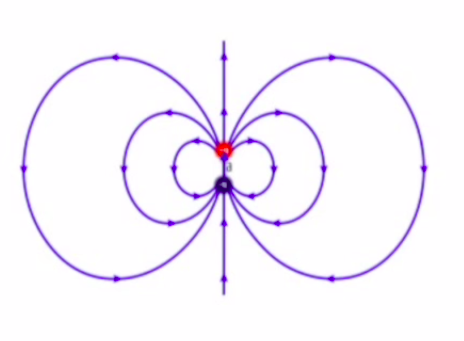
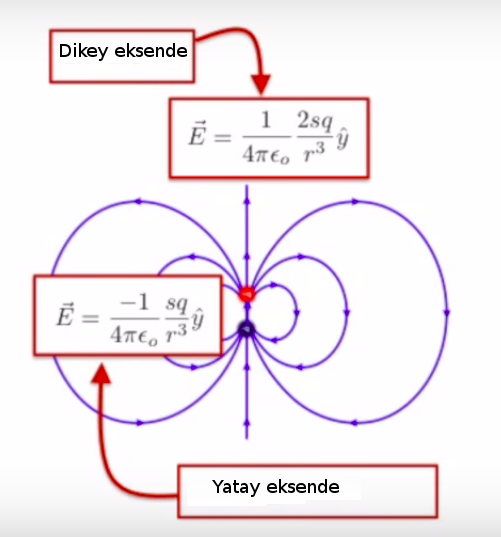

Önceki derste yükün muhafaza edildiğinden bahsettik, evrenin toplam yükünün değişmesi imkansız, Bu demektir ki evrendeki tüm pozitif yüklerden tüm negatif yükleri çıkartırsam, o sayı her neyse değişemez, ne olduğunu bilmiyoruz ama farketmez. Yük yaratıp yoketmek mümkün, eğer bunu çiftler üzerinden yaparsak.
Bugün yalıtkanlar ve iletkenler hakkında konuşacağız. Yalıtkanlarda elektronlar atomlarına yakın dururlar, iletkenlerde yükler sanki bir sıvının aktığı gibi akarlar, hatta formel olarak onların bir sıvı olduğunu da iddia edebiliriz, bunun anlamını daha detaylı olarak göreceğiz. Ayrıca her iletkende, denge durumunda ki "denge'' sözüyle ne demek istediğimi de açıklayacağım, toplam elektrik alan sıfır olmalıdır. Ayrıca iyonsal çözeltiler ve metallere yakından bakacağız. Zamanımız kalırsa nesneleri yüklemek ve boşaltmak (charging and discharging) konusuna da bakacağız.
Çift kutupluluğun (dipole) üzerinden geçelim. İki yük var elimizde, üstte artı altta eksi, bu çift etrafında bir elektrik alan etkisi yaratıyor, öyle ki alan artı yüklü parçacıktan dışarı doğru, ve eksi olana doğru / onun yönünde etki ediyor.
 
Eksen üzerinde (on-axis), y-ekseninde, yukarı doğru etkili olan alan üst sağ resimde üstteki kutu. Çift kutupluluk momenti \(sq\), kutbun bir ucundaki yük \(q\), \(s\) ise negatif ve pozitif iki yükün arasındaki mesafe.
Üst sağ resimle devam edelim, yatay eksen üzerinde farklı bir formül görüyoruz, çünkü orada elektrik alanı yukarıdan aşağı giderken işaret değiştirmek zorunda değil mi? Yatay bağlamda alan biraz daha zayıf.
Şimdi bir soru: diyelim ki alttaki resimdeki sol kısımda olan bir çift kutup var. Ve yine diyelim ki X ile görülen yere ikinci bir çift kutup koyuyoruz, ve bu kutup ortaya buraya dönebiliyoruz, acaba bu ikinci çift kutup görülen seçeneklerden hangisi olurdu?
Acaba X noktasındaki elektrik alan hangi yönde olurdu? Aşağı doğru. O zaman üstteki dört seçenekteki çift kutupların hangisi bu tür bir alan yönünde en mutlu olurdu? C seçeneği değil mi? Çünkü pozitif yükler alan üzerinde akmaya meyilli, negatif ters yönde, bu kuvvet eşittir yük çarpı elektrik alan, yani \(F=qE\), formülüyle alakalı tabii. Pozitif yük alanı takip eder, negatif tersine gider. O zaman C orada en mutlu olur.
Peki şimdi? Sadece çift kutbu çevirdim, alt üst, üst alt oldu,
O zaman A tabii ki.
Peki eğer X'e bir çift kutup koyduktan sonra (ve yine serbest bırakıp) soldaki kutbu bir aşağı, bir yukarı olacak şekilde habire değiştirip dursam? X üzerindeki kutup nasıl davranırdı? Aynen solundaki kutup gibi o da bir aşağı bir yukarı inip çıkardı değil mi?
Bu olay aslında yüzeylerde görülen çok ilginç bazı fiziksel ve kimyasal olayların kaynağıdır. Van der Waals kuvvetleri mesela, kimyadaki VdW etkileşimi duyanınız var mı? Büyük bir ihtimalle öğrenirken VdW kuvvetini tarif eden çok çetrefil gözüken bir enerji ifadesi okutulmuştur, fakat bu fenomenin fiziksel çıkış noktası biraz önce tarif ettiğimiz gibi dalgalanmakta olan çift kutuplu momentlerdir.
Üstteki resimde görülen atomlar meseala nötr, ama etrafındaki elektron bulutu düşünelim şimdi, bu bulut şekil olarak simetriktir, eğer çok hızlı fotoğraf çekebilen bir fotoğraf makinemiz olsaydı ve atomun resmini çeksek herhangi bir anda bu elektronların belli bir yerde olduğunu görebilirdik, sürekli hareketlilik simetrik küreyi veriyor, ama herhangi bir anda elektronlar çekirdeğin ya bir tarafında ya diğer tarafında olacaktır, o zaman herhangi bir anda ufak bir çift kutupluluk durumu ortaya çıkar, ve bu ufak çift kutupluluk sürekli dalgalanma halinde olacaktır. Ve biraz önce gördüğümüz iki çift kutbun birbiriyle senkronize olmasında olduğu gibi, birbirine yakın iki atomun çift kutupluluğu da bu şekilde senkronizasyona yol açacaktır, dönen bir atom diğerinde dönüş hareketine sebep olur. Bu beraber dönüş atomların birbirine biraz daha çekilmesine sebep olur ve buna VdW kuvveti diyoruz.
Geko [1] isimli hayvan türünü biliyorsanız, onların önemli bir özelliği bu VdW kuvvetine bağlı. Geko gördüyseniz, ya da evinize girdiyse görmüşsünüzdür, bu mahlukatlar düz tavanda bile yürürler. Bunu nasıl yapıyorlar? Ayaklarında bant mı var? Bant yok ama gekoların yapışkan uzuvları var. Bu yapışkanlığı bazı bilim adamları inceledi, acaba bazı dersler alıp suni yapıştırıcı üretmek için kullanamaz mıyız ilgisiyle baktılar, ve gördüler ki geko ayaklarında kılcıklar var, bu kıllar / kılcıklar gittikçe ayrılıp inceliyor, bölünüyor, bölünüyor, ve bu kılcıklar gekonun ayağını bastığı yerdeki her türlü ufacık çıkıntılara dolaşıyor, onlara yakınlaşıyor. İşte bu yakınlaşma sayesinde yüzey ve geko atomları yeterince yaklaşıyor ki o anlattığımız dalgalanan çift kutupluluk olmaya başlıyor, ve zayıf ta olsa bir çekim meydana geliyor, VdW kuvveti yani.
Şimdi düşünüyorum da bunu nasıl buldular acaba? Deneyle mi yoksa hesapla mı? İnşallah hesaptır. Bu arada duydum ki dört tane geko bacağı bir insanı bile tutabilir. Çok kuvvetli yani.
Bir soru daha: bir tane değil iki tane çift kutup olsun şimdi, altta görüldüğü gibi. Bu durumda X'e koyulan bir çift kutup hangi yönü göstermeye meyilli olur?
Ayrıca dikey ve yatay yöndeki alan formüllerini de dikkate alalım.. Bu soru biraz daha alengirli, dolambaçlı değil mi? Sizden gelen elektronik cevapları bilgisayarda görüyorum şimdi, tüm seçeneklere eşit dağılmış gibi duruyor. Sınıfın cevabı her telden çalıyor! Bu sorunun zorluğu, bir çift kutup bir yönü isterken diğerinin ters yönü istemesi.. Ne olacak?
Bazılarınızın yana doğru, yatay işaret eden seçenekleri seçtiğini gördüm. Bunun niye olamayacağını anlamak iyi olur. Alttaki çift kutbu X ile aynı dikey eksende olacak şekilde yerleştirdim, onun alanı tam yukarı doğru etki yapacak. Daha üstte olan çift kutbu X ile aynı yatay eksene koydum, onun alanı ise yukarıdan dolanıp tam aşağı etki yapacak. Burada hiçbir \(x,z\) bileşeni yok. Bu sebeple çift kutuplardan gelen iki vektörü topladığım zaman muhakkak \(y\) ekseninde bir sonuç bulmalıyım. Değil mi? Ve biri yukarı, diğeri aşağı giden iki vektör toplamı bana yine dikey yönde sonuç verir, hiçbir zaman yana doğru sonuç vermez. Bu demektir ki B,D secenekleri elenebilir. O zaman, biri aşağı diğeri yukarı bastıran etkilerin hangisi daha kuvvetli? Aynı dikey eksende olan diğerine göre 2 kat daha fazla. O zaman onun etkisi baskın çıkar, ve toplam etki A seçeneğindeki sonucu ortaya çıkartacaktır.
Bu dersi çok sevdiğimi söylemiştim ama bugünün dersini daha bir seviyorum, çünkü farklı materyellerden bahsettik ve benim araştırma alanım sıkıştırılmış madde fiziği (condensed matter physics). Bu alanın ana konusu dokunabileceğimiz şeylerdir, elle tutulabilecek maddelerdir. Elde tutulabilen, bir bardağa koyulabilen, vs. bir şey varsa ortada, onun incelenmesi sıkıştırılmış madde fiziğine düşer.
Bu konu ayrıca faz geçişleriyle de ilgilenir, mesela suyun buz olması, gazın soğuyup sıvı haline gelmesi gibi. Şimdi bazılarınız düşünüyor ki "bunlar zaten araştırılmış konular değil mi?''. Size bir soru sorayım: maddenin hangi fazlarını biliyorsunuz? [Bazı tipik cevaplar geliyor, birisi 'Bose-Einstein kondensatı (condensate)' diyor hoca bunu beğeniyor, bir başkası süperakışkanlar diyor]. Evet maddeleri süper ısıtıp süper soğutabilirsiniz, süperakışkanlar var sonra, mesela helyum atomlarını alıp yeterince soğutursam hiç ağdalığı olmayan bir süperakışkana dönüşürler. Mesela, aman bunu evde tekrarlamayın, parmağınızı alıp bir süperakışkanı karıştırmaya uğraşsanız, sıfır ağdalık hissedersiniz, yani parmak hiçbir engelle karşılaşmazdı.. Mesela bal çok ağdalıdır, su daha az ağdalıdır, süperakışkan madde ise sıfır ağdalıdır. Ilginç değil mi?
Başka? Kimin sıvı kristal görüntü birimi (liquid crystal display) olan bir aleti var? [Öğrenciler biraz şüpheli bazıları uyanıyor, cep telefonlarının ekranı bu maddeden, yani herkesde var]. Eveet.. hepimizin cebinde var bundan. Sıvı kristal.. be biçim bir şey bu..? Hem sıvı hem kristal..? İşte bu öğe de aslında maddenin apayrı bir fazı. Bu maddede bir yönde akış var, kristal olan diğer yönde akış yok. Bu arada bir sürü sıvı kristal fazı vardır, bunların çoğunun egzotik isimleri vardır, nomatikler, smektikler, heksatikler, vs. Yani size lisede anlatıldığından çok daha fazla faz çeşidi vardır, ve tüm bu faz çeşitleri benim alanımın ilgi alanına giriyor.
Özelde söylemek gerekirse benim araştırdığım konu elektronların katı maddeler içinde nasıl davrandığı, ki bu konuyu bugün derste işleyeceğiz. Maddelerin içindeki elektronların kendi fazları, ve faz geçişleri vardır. Bu aslında hepimizin bildiği bir şey; bir metali düşünün, mesela bir bakır kablo, ona elektrik uyguluyoruz, kablodaki elektronlara ne olur? Hareket ederler değil mi ve böylece bir akım oluşur. Ve bu şekilde akan herhangi bir şey "sıvı'' olarak nitelendirilebilir, formel, matematik olarak bu maddenin tarifi onun sıvı olduğunu gösterir. Yani bir metalin içinde bir elekton "sıvısı'' ortaya çıkar.
Kıyasla bir yalıtkan maddede, mesela o köpükle yapılan kahve bardaklarını düşünelim, bu bardağa voltaj uygularsam elektronları hareket etmez, akmazlar, yani bir yalıtkan içindeki elektronlar katı maddesel bir faz içindedir. Elekronların bir faz değişimi geçirmesi ve katı maddesel yalıtkan davranışından sıvı maddesel iletken davranışı göstermeye başlaması mümkündür, bu tür bir faz geçişi var.
Diğer türlü faz geçişleri de vardır. Mıknatısı olan var mı? Ben mıknatısları çok severim, çocuklarım var onların sayesinde bir sürü mıknatıslı oyuncak var etrafta, bunlar sadece çocuklar için tabii [hoca şaka yapıyor kendisi de sevdiği için]. Hernseyse bir mıktanıtısı alıp yeterince sıcak bir ocakta ışıtırsanız, çok, çok yüksek ısıda bir süre sonra mıknatıs eriyip bir ufak sıvı havuzuna dönüşür. Ama bu olmadan çok önce bir geçiş ısısında birdenbire küt diye manyetikliğini kaybederdi. Eğer mıknatısı soğutsanız manyetikliğini pat diye tekrar kazanırdı. Herhangi bir geçiş ışışında bu şekilde birdenbire oluveren her şey bir faz geçişinin örneğidir.
Süperiletkenler bir diğer örnek. Konu katı maddeler içindeki elektronların davranışı olunca görülebilecek farklı davranışların sınırı yok. Katı maddeler içindeki elektronlar sonsuz tane faz şekline yol açabiliyor. Bu benim alanım işte. Hatta ben kendim de bir bir madde fazi keşfettim, vorteks smektik, belki biriniz kullanır birgün. Ama biz bu derste daha basit örneklere odaklanacağız, yalıtkanlar ve iletkenler. Yalıtkanlarda, daha önce dediğimiz gibi, yükler hareket etmez, yerinde durur, bağlı oldukları atomda kalırlar. Bir iletkende yükler akabilirler, aynen bir sıvıda olduğu gibi, ve biz onları bu şekilde tarif ederiz.
İletken ve yalıtkanlardaki elektronları biri atomuna bağlı diğeri serbest iki köpek gibi düşünebiliriz.
Peki o zaman bir yalıtkanı alıp ona bir elektrik alanı uygularsam ne olur? Yükler biraz kayarlar ve materyel kutuplaşır değil mi? Her elektron azıcık yana kayar, çok çok az, 1 Angstrum'dan daha az. Elle tutulabilecek bir materyel içinde aşağı yukarı \(10^{23}\) atom vardır, büyük bir sayı, ve tüm bu atomların her birinde elektron azıcık kayarsa bu büyük bir toplam etki yaratır. Bu etki alttaki gibi resmedilebilir, bir noktasal yük yaklaştırdığımızı düşünelim, bu bir alan yaratır, ve kutupsallaşma oluşur.
Elektronlar yüke biraz yaklaşır, ama atomundan, molekülünden kaçamaz tabii (tasmalı köpek durumu, biraz hareket alanı var, çok uzağa gidiş yok).
Bu kayma özellikle maddenin yüzeyinde ölçülebilir etkiye sebep olur. Elektrik alan uygulanan bir yalıtkanın alt yüzeyinde toplam negatif, use yüzeyinde toplam pozitif yüzey yükü ölçerdin. Bu yüzey yükünün ne kadar büyük olduğunu niceliksel olarak tanımlamanın bir yolu var. Eğer üstte toplam pozitif, altta toplam negatif yük var ise, bu iki bloğun temel alarak toplam bir kutuplaşmayı hesaplayabilirim. Kutuplaşabilme (sabiti) \(\alpha\), uygulanan elektrik alan \(\vec{E}\) üzerinden kutuplaşma \(\vec{p} = \alpha \vec{E}\)'yi veriyor. Bu formülü tek atom için kullanmıştık daha önce.
Yan uygulanan alan için toplam çift kutuplu moment \(\vec{p}\) vardır, bu \(\alpha\)'yi baz alır, kuantum kimyacıları \(\alpha\)'yi hesaplayabilir, ama nihai etkinin üzerinden de bu hesabı yapabiliriz.
Fakat işler biraz daha karışabilir. Alan uygulanınca materyelin içindeki her şey kutuplaşmış hale geldi, her tarafta çift kutuplu momentler var. Bu momentlerin her biri de ayrı ayrı bir elektrik alan yaratacaktır. Yani bir dışarıdan gelen alan, bir de onun etkisiyle içeride oluşan ek alan. Şimdi toplam alanın, etkisinin ölçmesi daha zorlaştı.
Fakat biliyoruz ki tipik mateyeller ve yalıtkanlar için dışarıdan uygulanan alan \(\vec{E}_{applied}\) çift kutupların oluşturduğu alan \(\vec{E}_{dipole}\) çok, çok daha büyüktür, \(\vec{E}_{applied} >> \vec{E}_{dipole}\). O zaman yaklaşık olarak sistemdeki toplam alanın dışarıdan uygulanan alan olduğunu söyleyebiliriz. Derslerimizde bu yaklaşıklamayı kullanacağız.
İletkenlerde değişik bir durum var tabii, orada yükler daha serbest hareket edebiliyorlar, bu tasmalı değil serbest koşan mutlu köpek oluyor,
İletkenlere örnek mesela bakır, hatta iyonize edilmiş sıvılar; tuzlu su bu tür bir sıvıdır, sodyum ve klorür (sodium chloride) atomları ayrılır ve her ikisinde bir toplam yük oluşur, ve bu yük serbestçe dolaşabilir, pozitif iyonlar, negatif iyonlar vardır, değişik yönlere gidebilirler.
Kuvvet yük çarpı o noktadaki toplam elektrik alansa, pozitif yükler alanın yönünde o kuvvetle itilirler, negatif yükler ters yönde kuvvet hissederler. Kuvvet yük çarpı alan, yükün işareti eksiyse gidiş ters yönde olur. Herhangi bir iletken içinde yükler bir sıvının aktığı gibi akar. Bir iletkenin içinde, herşey durulmuş, yerli yerine oturmuş ise elektrik alan sıfırdır. Yalıtkanların içinde alan uygulandıkça zayıf bir toplam elektrik alan vardır, ama dışarıdaki daha kuvvetlidir, olduğu sürece onu sayarız. İletkende sıfır. Bunu ispatlaması biraz zor ama göreceğiz.
İspatlamak istediğimiz bir iletkenin içindeki yüklerin alan kalmayıncaya kadar hareket edeceği. Denge noktasında (equilibrium) hiçbir şey hareket etmiyor. Bir diğer konum kalıcı durum (steady state), bu akım sabit demek.
İspat için çelişki ile ispat (proof by contradiction) yöntemini kullanacağız. Bu yöntem şöyle işler; ilk önce ispat etmek istediğimiz şeyin tersinin doğru olduğunu farz ederiz, sonra bu faraziyeyle devam edince bu ters olanın kendisiye çeliştiğini gösteririz. Böylece tersini aldığımız söylem doğrulanmış olur.
ki \(\vec{E}_{net} = \vec{E}_{pol} + \vec{E}_{app}\), \(\vec{E}_{app}\) uygulanan alan, \(\vec{E}_{pol}\) kutuplaşmadan ortaya çıkan alan, \(\vec{E}_{net}\) toplam. Örnekte iletkenin kalıcı, duruk (static) bir denge noktasının olduğunu farz ediyoruz, bu faraziyenin bir diğer kısmı bu toplam (net) elektrik alanı sıfır olmaması. Tersini aldığımız söylem alanın sıfır olması.
Şimdi, eğer bu doğru olsaydı, \(E_{net} \ne 0\) olunca yükler hareket edecektir. Yükler sıvıdır, hareket edebilirler. Ama o zaman bu denge durumu olamaz, çünkü denge durumu yüklerin hareketinin durduğu konumdur. Faraziye kendisiyle çelişti, o zaman bir iletkenin içinde denge durumunda toplam elektrik alanı sıfır olmalı. Ana fikir yüklerin etrafta onları itecek elektrik alanı kalmayıncaya kadar hareket edecek olmaları.
Şimdi alttaki gibi bir iletken düşünelim, biraz yamuk yumuk bir görüntüde. Diyelim ki madde dengede, o zaman toplam elektrik alan sıfır \(E_{tot} = 0\), hiç yük hareketi yok. Ama ben dışarıdan bu maddeye ek yük verebilirim değil mi? Bir şekilde onu yüklerim, ek yük olur. Diyelim ki bu iletken maddeye ekstra elektronlar yükledim. Bu olunca ekstra yük her zaman maddenin yüzeye akmak zorundadır.
Eğer iç bölgede olsalardı birbirlerinin elektrik alanlarını hissederlerdi, birbirlerini iterlerdi, yani birbirlerini maddenin dış (en uzak) noktalarına doğru gitmeye zorlarlardı. İşte bu sebeple ek yükler maddenin dışında bulunurlar.
Farklı bir cisme bakalım. Alttaki mesela. Beyaz yerler boşluğu temsil ediyor, boşluk, vakum olabilir, gri yerler iletken bölge.
Soru: bir iletkenin iç yüzeyinde yük olması mümkün mü? Evet, içi boş bir iletken kabuk bu şekilde bir yüke sahip olabilir. Elde etmek için bir pozitif noktasal yükü alırız, ve onu küresel bir iletken kabuk ile sarmalarız. Ortada pozitif yük olduğu için kürenin elektronlar orta noktaya çekilecekler, ve bir miktar negatif yük bu şekilde içeri doğru yönelmiş olur. Bu durumda arkada pozitif yükler kalır, ve toplam artı bu yükler kürenin dış kısmında olurlar. Fakat her iki durumda da toplam negatif ya da pozitif yükler yüzeye gitmiş olurlar.
Şimdi metaller konusuna gelelim. Elektrik alanlar metalleri nasıl etkiler? Günlük hayatta alışık olduğumüz metaller, bakır mesela, onların atomsal yapısına yeterince yakından bakabilsek düzenli bir yapı görürdük. Bakır atomları kristalsel bir yapıda durmayı severler.
Bu dışarıdan metalleri görüşümüzle uyuşmayabilir, çünkü metaller rahat eğilebilen, şekil verilebilen şeyler, biz lokal atomik dizimden bahsediyoruz, çok ufak boyutta. Elektronlar ise bu yapının etrafında bir deniz gibidir, akarlar.
Bakırın çok sayıda elektronu vardır, ve elektronlarının çoğunluğu, atom bazında, atomun çekirdeğine yakında dururlar. Ama bakırın dışında, çekirdeğinin uzağında da elektronları vardır, ve bu elektronlar kopup üstte görülen elektron denizine katılabilir, ve materyelin her tarafında gezinebilir. Bu kimyasal bağlanmaya benziyor. Eğer birbirine yaklaşan iki atomu alırsam bu iki atomun en dıştaki iki elektronu iki yaklaşmış atomun yörüngesinde sanki tek bir atommuş gibi dolaşmaya başlayabilirler. Eğer üçüncü bir atom yaklaştırırsam, 4. 5., vs. bu böyle devam edebilir. İşte bahsettiğim elektron denizi bu şekilde ortaya çıkar. En dıştaki elektron tüm materyel boyunca gezinebiliyor. İşte bu elektron bir sıvı gibi davranır, sıvı gibi akabilirler.
Altta metalin bir modelini görüyoruz,
Atomları normal bir kafes / örgü şeklinde organize olmuş, ayrıca daha önce bahsettiğimiz elektron denizi de var tabii. Bu metale sağ yönde bir elektrik alanı \(\vec{E}_{app}\) uygularsak o zaman üst resimdeki üst sol resimden üst sağ resimdeki durum olur, elektron denizi alana doğru gider, o zaman materyelin solunda toplam negatif bir yük oluşur, sağında ise toplam pozitif bir yük oluşur. Tabii bir iletkende, her şey yerli yerine oturduktan sonra, toplam yük sıfır olmalıdır. Metal her diğer şeyden izole, alan uyguluyorum, toplam yük sıfır. Metalin solu ve sağındaki yükler koca bir çift kutup (dipole) oluşturur, ki bu kutup ta bir elektrik alan yaratır, bunu da üstteki diyagramın altındaki resimde görüyoruz. Kutuplaşma alanı \(\vec{E}_{pol}\) uygulanan alanın tam ters yönünde, ki bu alan uygulanan alanı iptal edecektir. Bu mantıklı değil mi? \(\vec{E}_{pol}\) alanı pozitif yüklerden dışarı negatiflere doğru olmalıdır, ve bu yön uygulanan yöndeki alanı iptal eder. Yani bir iletken uygulanan alana göre kutuplaşabilir.
Şimdi bir sürü denkleme dalmadan önce bir materyeldeki elektronlara kalıcı durum halinde ne olur onu anlatmak istiyorum. Şimdiye kadar denge durumunu gördük, alanı bir metal parçasına uyguluyorum, yeterince bekliyorum, herşey yerine oturuyor, bir denge oluşuyor. Kalıcı durum bundan farklı mesela denge olmayan ama sürekli bir akımın geçtiği (kalıcı) materyel durumu böyle. Bu tür bir durumu hayal edelim ve bir elektronun atomların çekirdeği ile nasıl etkileşim içinde olduğunu düşünelim.
Örnek olarak bir atom örgüsü seçmemiz lazım, bu odadaki koltukları örnek kullanalım. Odadaki her koltuk bir atom çekirdeği olsun. Şimdi siz bir elektron olduğunüzü düşünün, ve odanın bir tarafından diğer tarafına geçmek istiyorsunuz. Önünüzde bir sürü engel olacak, masalar var [ve hoca masa aralarından değil üstüne basarak gidilme şartını koydu]. Şimdi iyi bir koşucu olsa aramızda ona söylesek şuradan şuraya git, o masalara bakıp onların üstüne belli bir ritmde / şekilde / aralıkla basarak öteki tarafa gidebilirdi değil mi? Ya da bir başka yöne... Eğer masalar yerli yerinde duruyorsa koşucunun gözlerini bile bağlayabilirdim, o ritmi takip ederek gidişini yapardı.
Bir materyelin içindeki elektronlar da böyledir. Gidecekleri yöndeki atomsal duruma bakarlar, bu atomların periyotsallığını [statik bağlamda, aradaki yapının boşluk kalıbını] görürler, elektronlar kuantum mekaniktir yani bir dalga fonksiyonları vardır, hareketlerinin bir ritmi vardır yani (dalga ritimseldir nihayetinde), elektronlar bir ritm seçerler ve bu onların örgü içinden "akabilmesini'' sağlar. Bu elektronların sıvıya benzer hale gelmek için kullandığı kuantum mekanik numaralardan biridir.
Peki biraz önce bahsettiğimiz koşucu masalar üzerinde sekerken, biz gidip üzerine basılacak bir masanın yerini değiştirsek ne olur? Koşucu düşer tabii. Benzer bir durum elektronların da başına gelir. Elektron belli bir kalıba göre yola çıkmış ama onun beklediği örgünün bir noktasında bir atom eksik olabilir, bu normal, her materyelde kusurlar olabilir, bu kusurla karşılaşınca belli bir ritme göre giden elektron oraya çarpar ve hızını kaybeder. Materyele uygulanan elektrik alanının o elektronu tekrar hareketlendirmesi gerekecektir, bu olunca elektron belki başka bir yere çarpacaktır, ekstra bir atom var bu sefer belki, aynı şey olacaktır, vs.
Drude Modeli denen teorinin temeli üstte tarif edilen elektronun bir materyel içindeki hareket ediş şeklidir.
Elektrik alanı elektrona uygulanıyor, bu elektronda lineer bir hızlanma başlatıyor (grafiğin ilk kısminda görüyoruz), dersimize giriş olan önceki dönemdeki kavram, momentum prensibi. Hızlanma oluyor ta ki bir kusurlu noktaya çarpıncaya kadar, o noktada elektron hız kaybediyor, grafikte bu düşüşü de görüyoruz. Sonra tekrar başlangıç görüyoruz, biraz önce anlattığımız gibi, bu da bir sonraki lineer tırmanış, vs. Böyle devam ediyor, ve grafikte görülen zigzaklı şekil burada geliyor.
Ayrıca elektronun çarpığı sadece kusurlar değil; materyel örgüyü oluşturan atomik çekirdekleri düşünelim, eğer materyel üzerindeki ısıyı arttırırsak bu atomlara ne olur? Titremeye başlarlar değil mi? Titreyince yerleri biraz sağa sola kayacaktır, bizim gözleri bağlı koşucu elektronumuz bu yer değişikliklerine de çarpabilir.
Fiziksel kavramlar bunlar. Şimdi formüllere bakalım. Bir metale net elektrik alan uyguluyoruz, her elektronun üstteki grafikte görülen testere şeklinde görüntüsü olacak. Buna veriye / grafiğe bakarak averaj hızı nasıl hesaplarım? İlk üçgene alalım, hız çarpışa kadar zamana göre lineer bir şekilde artıyor, oradaki averaj hızı hesaplayacağım. Çarpma anından az önce elektronun bir bir net hızı vardı, bu hız nedir? Onu momentum prensibinden elde edebiliriz, \(\Delta p / \Delta t\) net kuvvete eşittir, burada \(p\) momentum demek, biz fizikçilere harfler yetmiyor o yüzden eski harfleri kullanıp duruyoruz (!). Neyse \(\Delta p / \Delta t\) net kuvvet ise \(qE\)'dir, bir elektron için bu \(-E\), yani negatif yük, -1, çarpı elektronun hissettiği net elektrik alan. Momentumdaki değişimi elde etmek için çarpmadan az önce \(p\) idi, sıfırdan başladı, o zaman
\[ \Delta p = p - 0 = e E_{net} \Delta t\]
Burada \(\Delta t\) çarpma anına kadar geçen zaman, yani figürdeki ilk üçgenin tabanı bir anlamda (çünkü x-ekseninde zaman var). Şimdi üstteki formülü \(v\)'yi bulmak için kullanabilirim. Hız momentum bölü kütle, tabii her şey gayrı-izafi kaldığı sürece, elektronlar bir materyel içinde hızlı hareket ederler ama hala hareketleri gayrı-izafi kabul edilir. Üstteki formülü de kullanırsak, ve dikkat hala tek bir üçgeni hesaplıyorum hala,
\[ v = \frac{p}{m_e} = \frac{eE_{net} \Delta t}{m_e}\]
Şimdi tüm üçgenler üzerinden bir ortalama hesaplamak istiyorum, üst çizgi ortalama demek,
\[ \overline{v} = \frac{e \overline{\Delta t}}{m_e} E_{net} \equiv \mu E_{net} \] %
Ortalamanın sadece iki çarpma arasındaki zamana uygulandığını gördük. Niye? Çünkü formüldeki diğer şeyler, yük, alan, elektronun kütlesi bu zaman boyunca değişmiyorlar. Her üçgeni farklı yapan onun tabanı, yani oluşmasındaki geçen zaman.
O zaman çarpmalar arasında geçen ortalama zaman \(\overline{\Delta t}\)'i biliyorsam, onu üstteki formüle koyabilirim, ve size ortalama hızı söyleyebilirim.
O zaman formülde \(E_{net}\)'den önce gelen her şeyi alıp, yani \(e\), \(\overline{\Delta t} / m_e\), onları bir sembol, mesela \(\mu\), altında gruplayabilirim. Çünkü bilmek istediklerimizden biri, eğer bir materyele bir elekrik alan uygularsam her elektronun ortalama hızının ne olacağı, ve yer değiştirme katsayısı olarak tanımlanabilecek bu \(\mu\) ile bir materyelin elektronlarının ne kadar hareketli olduğunu gösterebiliriz. Mesela herhangi bir elektrik alanı için yüksek yer değiştirme katsayısı yüksek hız demek olacaktır.
Kaynaklar
[1] Wikipedia, Gecko, https://en.wikipedia.org/wiki/Gecko